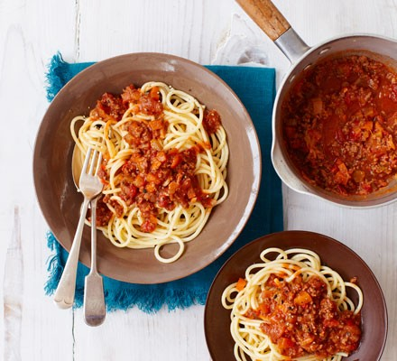

Spaghetti Bolognese

Serves: 6
Time: 2 Hours 15 Mins (25mins Prep/1hr 50 Cooking)
Ingrediants:
- 1 Tbsp Olive Oil
- 4 Rashers Streaky Bacon, Finely Chopped
- 2 Medium Onions, Finely Chopped
- 2 Carrots, Finely Chopped
- 2 Celery Sticks, Finely Chopped
- 2 Garlic Gloves, Finely Chopped
- 2-3 Sprigs Rosemary Leaves, Finely Chopped
- 500g Beef Mince
- 2 400g Tins Plum Tomatoes
- Small Pack Basil, 3/4 Finely Chopped 1/4 Left Whole
- 2 Fresh Bay Leaves
- 2 Tbsp Tomato Puree
- 1 Beef Stock Cube
- 1 Red Chilli Deseeded and Finely Chopped
- 125ml Red Wine
- 6 Cherry Tomatoes Sliced in Half
- 75g Parmesan
- 400g Spaghetti
Instructions:
- Put a large saucepan on a medium heat and add 1 tbsp olive oil.
- Add 4 finely chopped bacon rashers and fry for 10 mins until golden and crisp.
- Reduce the heat and add the 2 onions, 2 carrots, 2 celery sticks, 2 garlic cloves and the leaves from 2-3 sprigs rosemary, all finely chopped, then fry for 10 mins. Stir the veg often until it softens.
- Increase the heat to medium-high, add 500g beef mince and cook stirring for 3-4 mins until the meat is browned all over.
- Add 2 tins plum tomatoes, the finely chopped leaves from ¾ small pack basil, 1 tsp dried oregano, 2 bay leaves, 2 tbsp tomato purée, 1 beef stock cube, 1 deseeded and finely chopped red chilli (if using), 125ml red wine and 6 halved cherry tomatoes. Stir with a wooden spoon, breaking up the plum tomatoes.
- Bring to the boil, reduce to a gentle simmer and cover with a lid. Cook for 1 hr 15 mins stirring occasionally, until you have a rich, thick sauce.
- Add the 75g grated parmesan, check the seasoning and stir.
- When the bolognese is nearly finished, cook 400g spaghetti following the pack instructions.
- Drain the spaghetti and either stir into the bolognese sauce, or serve the sauce on top. Serve with more grated parmesan, the remaining basil leaves and crusty bread, if you like.